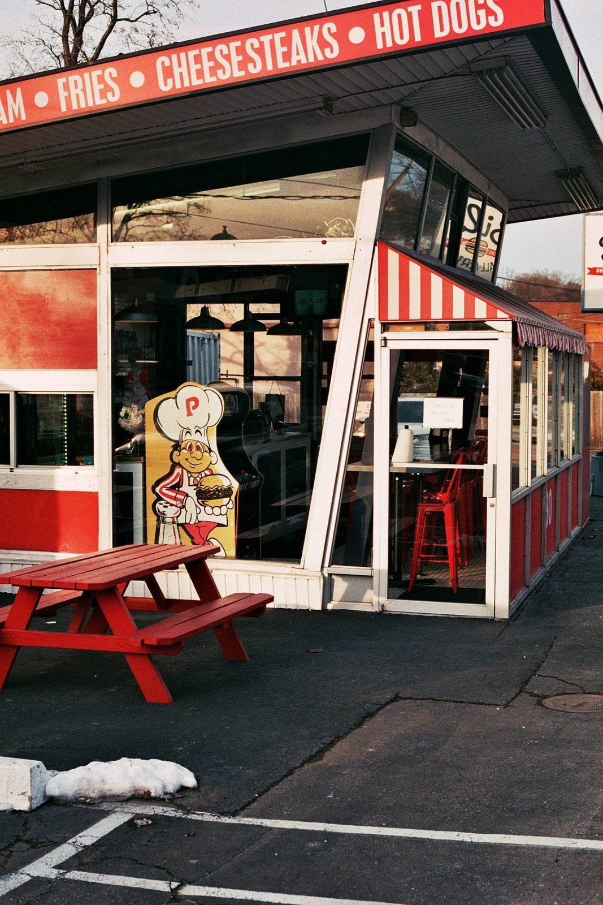
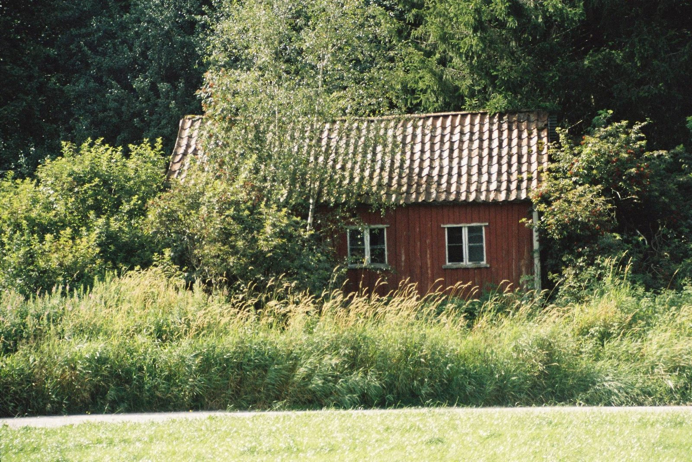
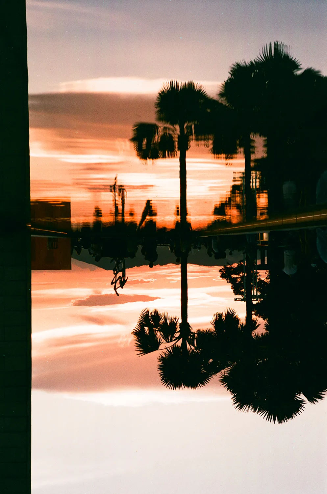
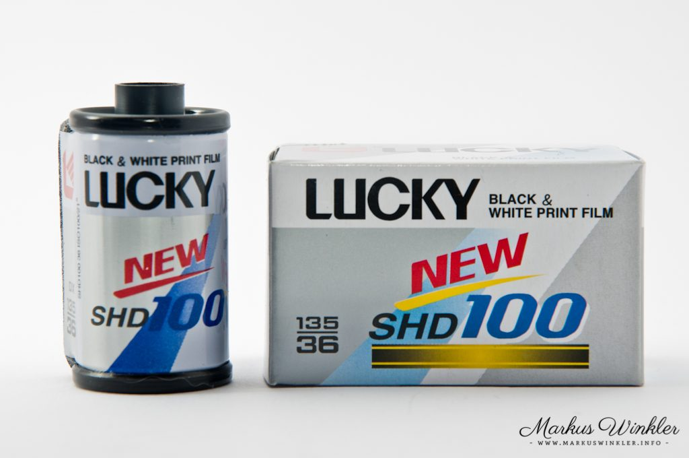
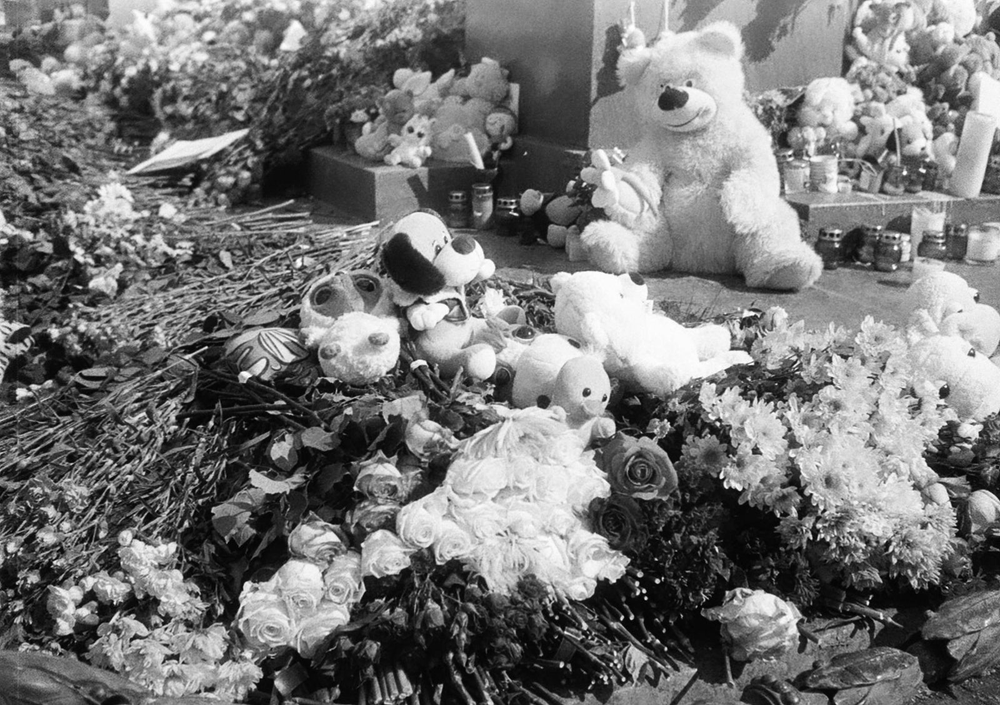
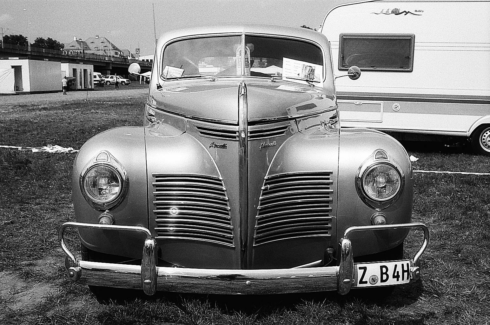

"필름이 사라지던 시절을 지나, 이제는 다시 만들어진다. 그 흐름의 한 축이 중국에서 일어나고 있다."
2012년 봄, 중국의 럭키 그룹(Lucky Group Corporation)이 컬러 네거티브 필름 생산을 중단했다. 한때 코닥과 협력해 처방을 손보던 허베이 바오딩의 그 공장은 컬러 컨베이어를 멈추고, 흑백 라인만 남겼다. 디지털이 시장을 가져갔다. 그 후 13년이 지났다. 그리고 다시 깡통이 굴러간다.
작년부터 두루 들리던 "Lucky가 컬러를 다시 만든다"는 소문은 2025년 봄에 실체가 잡혔다. 6월의 첫 시제품이 광동의 작은 카메라 가게부터 한 박스 두 박스 들어왔고, 7월 상하이 박람회에서 정식 공개됐다. 이름은 단순하다 — Lucky Color 200. ISO 200, C-41, 35mm 36컷과 120 모두. 가장 큰 의미는 처방에 있다. 이번엔 외부 협력 없이 Lucky의 자체 처방이다.
다시 돌아온 컬러 — Lucky Color 200
리뷰어들이 공통적으로 짚는 첫 인상은 "중립적인데 살짝 따뜻하다"는 점이다. Kodak Gold 200처럼 노란기가 짙지도 않고, Fujicolor 200처럼 시안이 살아있지도 않다. 약한 레드 캐스트가 보일 듯 말 듯 깔리고, 그레인은 같은 ISO 200대 필름들과 비교해 의외로 곱다. 이 톤은 의도된 것이라고 한다. Lucky가 자기 처방을 만들 때 "옛 Lucky 컬러의 맛"을 복원하려 했다는 설명이 따라온다.
다만 유통은 아직 좁다. 1차 출시는 중국 내 일부 리테일러를 통해서만 풀렸고, 해외에는 선전(深圳)의 리스풀 브랜드 Reflx Lab을 통해 소규모로 흘러나오고 있다. 가격대도 안정화 전이라 들쭉날쭉하다. 한국에선 아직 정식 수입선이 없고, 일본·홍콩 경유나 Taobao 직구로 한 박스 두 박스 들어오는 정도다.



Lucky의 컬러 부활은 갑작스러운 사건이 아니다. 흑백 쪽에서 먼저 길을 닦아두었다. 2017년에 SHD 100이 New 버전으로 돌아왔고, 2024년 3월에는 SHD 400이 다시 글로벌 시장으로 나왔다. SHD 400은 본래 2000년대 초에 Kodak 협력으로 생산되다 2012년 컬러와 함께 단종된 라인이다. 약 12년 만에 부활한 셈이다. 안티헤일레이션 층이 얇아 하이라이트 주변에 옅은 글로우가 도는 특유의 톤은 그대로 살아 있다.



계속 흐르던 흑백 — Shanghai GP3
Lucky가 단종과 부활을 한 사이클 돌리는 동안, 또 다른 흑백 라인은 거의 끊기지 않고 흘러왔다. Shanghai GP3 100. 1958년 상하이 셴베이(Shenbei) 광감재 공장에서 처음 만들어졌고, 그때부터 줄곧 중국 내수 시장을 채워온 입문용 흑백 필름이다.
오래 알려지지 않다가 2000년대 초 인터넷 + 홍콩의 일부 리셀러들이 eBay에 풀어 보내면서 해외 필름 동호인들의 컬트 라인으로 떠올랐다. 2016년에 원래 처방이 한 번 단종됐지만, 그 이름은 곧 상하이 지엔청 사진(Shanghai Jiancheng Photography)이 인수했고 2019년에 새 처방·새 필름 베이스로 재출시했다. 같은 이름이지만 다른 필름이 된 셈이다.
한 롤 가격은 35mm 36컷 기준 미화 3.5달러 안팎. 시장에서 가장 저렴한 패널크로마틱 흑백 필름 중 하나다. ISO 100의 곱고 차분한 입자, 안정된 톤, 무난한 라티튜드 — 화려하진 않지만 다루기 편하다. 학생, 입문자, 또는 한 롤을 가볍게 쓸 곳을 찾는 사람에게 한국 시장에서도 꾸준히 들어오는 한 롤이다.
시네필름의 중국식 확장 — Reflx Lab
Lucky가 자체 처방으로 컬러를 다시 만드는 한쪽에서, 다른 길을 가는 중국 브랜드도 있다. 선전(深圳)의 Reflx Lab이다. 자체 제조는 아니다. Kodak의 영화용 필름인 Vision3 라인을 35mm 사진용으로 잘라 깡통에 다시 담는 — 이른바 리스풀(re-spool) 방식이다.
주력 라인은 세 가지다. Reflx Lab 800(이전 800T)은 Vision3 500T를 베이스로, 영화용 리지(remjet) 층을 제거하고 일반 C-41 현상으로 처리 가능하게 가공한다. Reflx Lab 500T는 같은 Vision3 500T이지만 remjet 층을 남겨두어 본래 영화용 ECN-2 현상 그대로 가는 정통 노선. Reflx Lab 250D는 데이라이트 균형의 시네 톤. 비슷한 패턴을 동·서로 떨어진 두 회사가 평행하게 굴리고 있다는 점이 흥미롭다. 한쪽엔 미국 LA의 Cinestill, 다른 쪽엔 선전의 Reflx Lab.
둘은 2023년 800T 상표 분쟁으로 한차례 부딪혔다. Cinestill이 "800T" 자체에 대해 권리를 주장한 데서 시작됐고, 결국 Reflx Lab은 "800T"라는 이름 대신 "800"만 쓰는 쪽으로 변경했다. 작고 빠르게 자란 필름 동호 시장에 처음 들어선 본격적 상표 분쟁이었다.
필름이 다시 만들어지는 방식은 한 가지가 아니다. 처방을 새로 짜는 길, 옛 처방을 이어가는 길, 영화용 필름을 가정용으로 옮기는 길 — 길이 갈라질 뿐 흐름은 한 줄이다.
결국, 사라지지 않는다는 의지
2010년대 초 필름 시장이 가장 어두웠던 시기, 적지 않은 라인들이 사라졌다. Fuji Pro 400H, Kodak Ektachrome 일부, 그리고 Lucky의 컬러 라인. 같은 시기에 디지털 매체가 무엇이든 더 잘하게 됐다. 그래서 필름은 결국 추억의 자리에 머물 거라 모두가 예상했다.
그런데 2020년대 들어 흐름이 조용히 바뀌었다. Ektachrome E100이 돌아오고, Pentax 17 같은 신형 필름 카메라가 만들어지고, Lucky가 컬러를 다시 짜고, Shanghai가 흑백 라인을 이어가고, Reflx Lab과 Cinestill이 영화필름을 가정으로 옮긴다. 다른 방식이지만 같은 결론을 가리킨다 — 필름은 사라지지 않는다, 다시 만들어지거나, 이어가거나, 잘라 다시 깡통에 담긴다.
5ft.mag가 이번 라이브러리에 Lucky Color 200, Lucky SHD 100/400을 함께 등록한 이유다. 한 카탈로그 안에 같은 줄로 묶일 만한 이야기들이 모이고 있다. 다음 한 롤을 고를 때, 어쩌면 이번엔 깡통에 빨간 글자가 박혀 있을지도 모르겠다.